Waist, Stand Locker and Legs Cabling Manual¶
1 Cable construction¶

Each cable from the list above is made of U7191517 (IITCODE 2390) with its belonging lengths and 2 crimps RC_TLR_003_P_101 (IITCODE 3492).
| IITCODE | Alias | Description |
|---|---|---|
| 2390 | U7191517 | Stainless, cable construction 7x19mm, Polyamide coated - CARL STAHL GMBH |
| 3492 | RC_TLR_003_P_101 | Thimble for cable 1.75mm (Diam int/ext/L 1.6/4.6/6 mm) - material X5CrNiMo1712-AISI316 |
Alternatively, each cable can be seen as an assembly with its respective IITCODE and alias taken from CAD named RC_IIT_019_G_0XX - where XX is number from 11 to 16.
| IITCODE | Alias | Revision | Description |
|---|---|---|---|
| 4768 | RC_IIT_019_G_011 | 1 | WAIST BACK CABLE 11 |
| 4769 | RC_IIT_019_G_012 | 1 | WAIST FRONT CABLE 12 |
| 4770 | RC_IIT_019_G_013 | 1 | WAIST TOP CABLE 13 |
| 4771 | RC_IIT_019_G_014 | 1 | HIP FLEXION CABLE 14 |
| 4772 | RC_IIT_019_G_015 | 1 | ANKLE FLEXION CABLE 15 |
| 6377 | RC_IIT_019_G_016 | 1 | ANKLE FLEXION V2 CABLE 16 |
Cable 29 instead is aliased RC_IIT_090_G_005. At the moment this cable is home-made.
2 WAIST¶
This chapter describes the steps required for the wiring of the cables 11 - 12 - 13 which allow the movement of the waist of the robot, both during construction and in maintenance/repair phase.
VERY IMPORTANT NOTE
If you have only the cable 12 broken please proceed directly to 2.3
Whatever the other cases of figure you run into, the only way to substitute/replace the broken cables is to follow the next steps.
2.1 CHEST, BACK and BACK PACK COVERS DISMOUNTING¶
A - CHEST cover removal
| pictures | step by step guide |
|---|---|
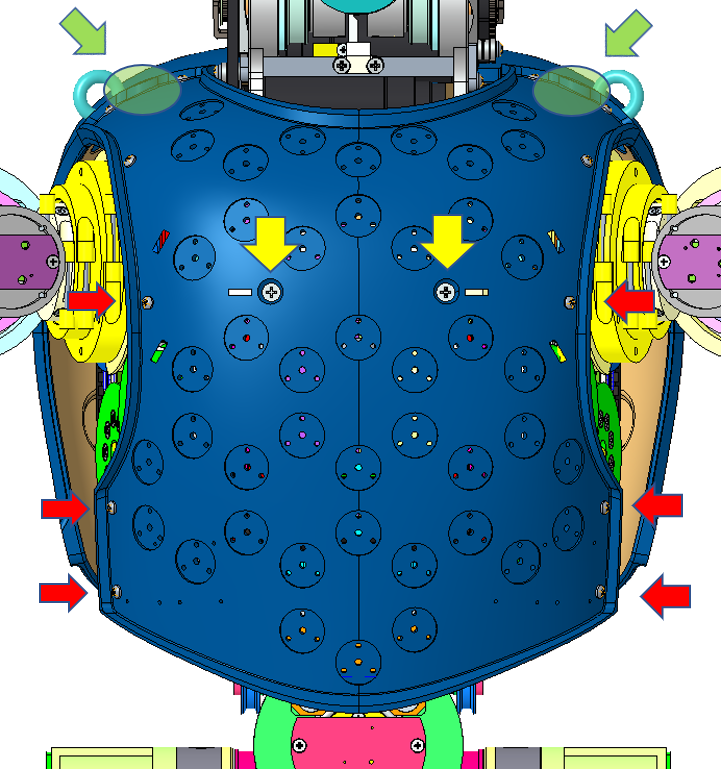 |
STEP 1: remove the 6 screws M2x5 (red arrows) (3 on each side of the skin patch of the chest cover) If you do not have skin on torso cover go on to the next step. STEP 2: flip over the skin in order to access the 2 screws beneath it. Remove the 2 screws M3x6 STEP 3: hold the chest cover and remove the 2 crews M3x8 at the level of the shoulder (green circles) |
| pictures of the connector | STEP 4: disconnect the the electrical cable connecting the robot to the skin board inside the cover If you do not have skin on torso cover go on to the next step. |
depending of your version you will need to move sideways the back cover or the backpack. version without backpack
B1 - NO BACKPACK VERSION
| pictures | step by step guide |
|---|---|
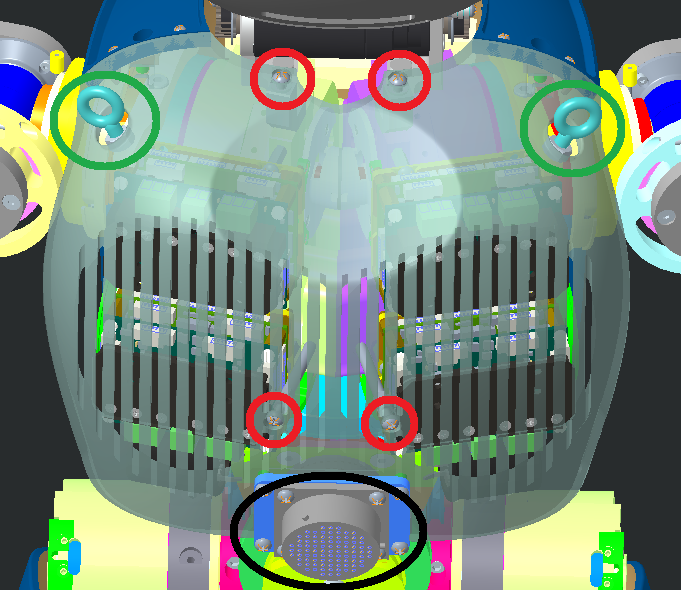 |
STEP 1: Unscrew the power cord on the back of iCub (black circle) STEP 2: Remove the 2 ring screws (green circles) STEP 3: remove the 4 screws M3x6 to be able to move sideways the back cover |
B2 - BACKPACK VERSION
| pictures | step by step guide |
|---|---|
| picture of robot with connections | STEP 1: disconnect the overall cables attached to the back pack -> |
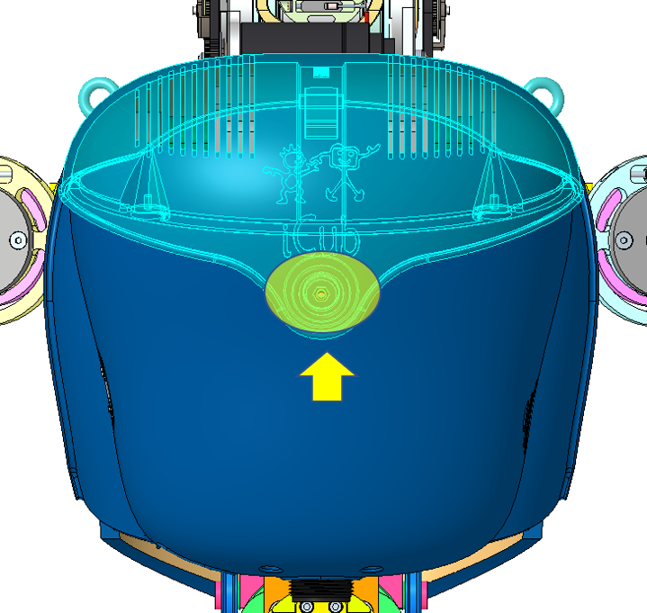 |
STEP 2: remove the top cover of the back pack some version have a screw in the yellow circle some just a magnet If you have the version with the screw - remove it and just flip the cover and you are done. |
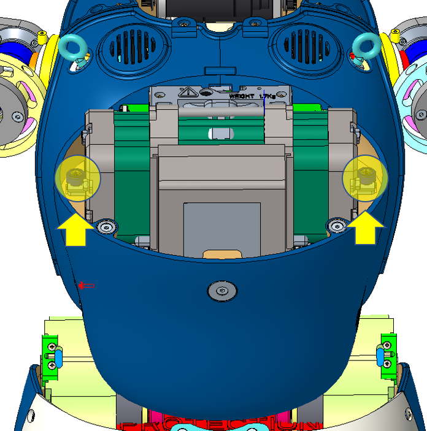 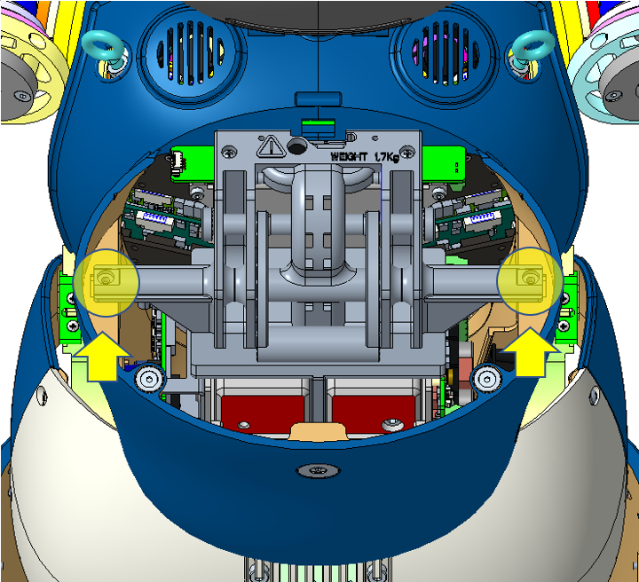 |
STEP 3: Either you use the real battery pack -> untighten the 2 lateral screws or the dummy battery pack -> remove the 2 lateral screw M2.5x10. |
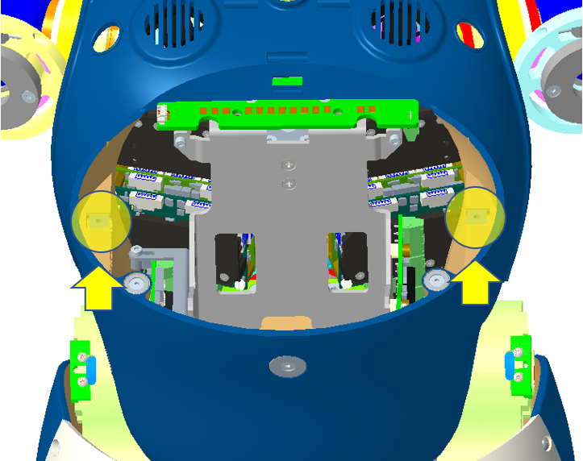 |
STEP 4: slide the 2 two pieces and remove them |
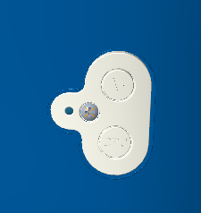 |
STEP 5: remove the buttons' cache by unmounting the screw M2x6 |
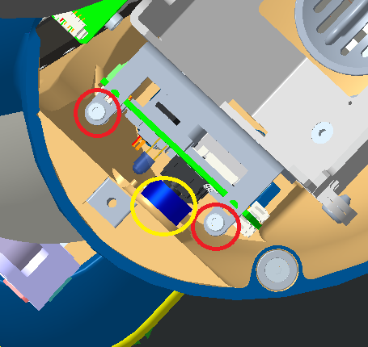 |
STEP 6: loose the 2 screws M2.5x8 holding the switches/ethernet board and push it inwards !!!NEED PICTURE TO SHOW THAT!!! |
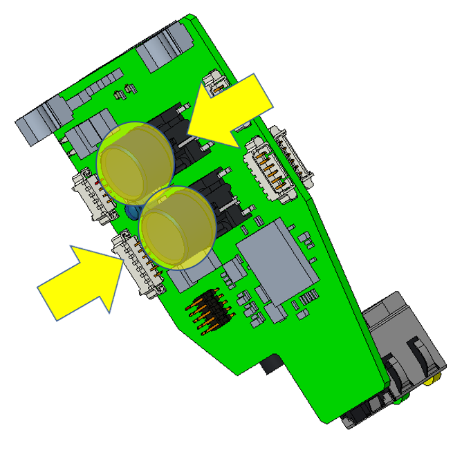 |
STEP 7: On the previous mention board, try to pop out the stand-off above the 2 push buttons. they will be in the way when we will try to remove the backpack cover later on, we may break them if remove wrongly |
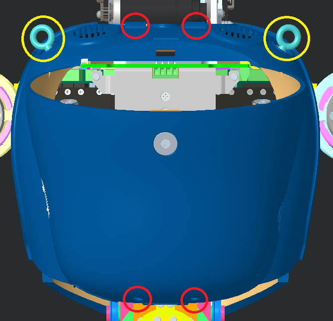 |
STEP 8: remove the 4 screws (red circles) holding the back pack in place. NECK : 2 screws M3x8 bottom back pack cover : 2 screws M3x12 Theoretically, you should already have removed the 2 ring screws but if you forget, please do it now!! |
 |
STEP 9: remove the backpack |
| watch out!!! | |
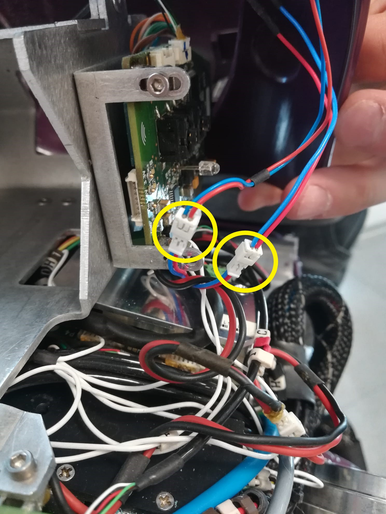 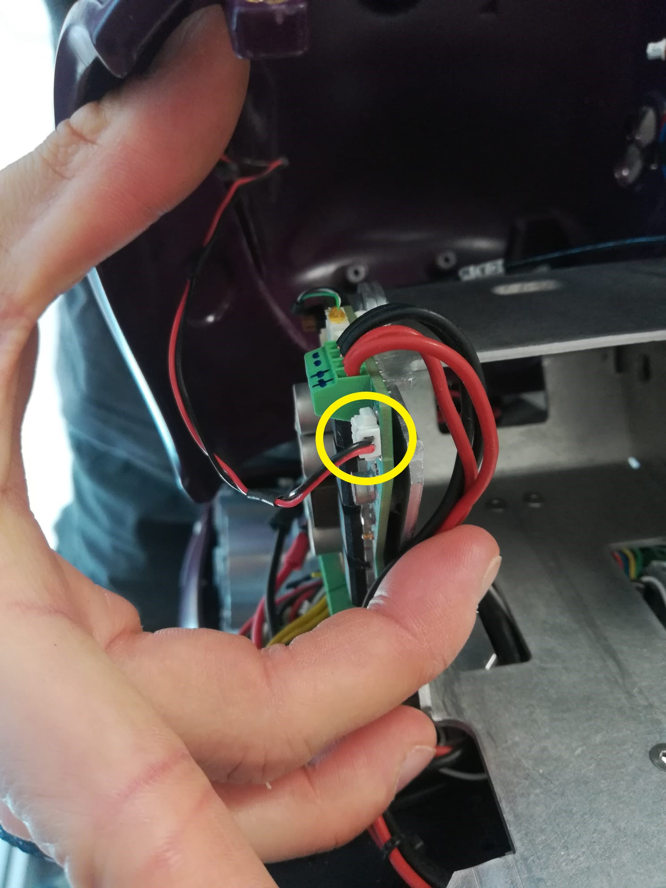 |
STEP 10: disconnect the 3 connectors (2 on switch board - to drive the 2 fans atop the backpack- and 1 on power board to drive the fans on the right side of the backpack) |
| STEP 11: cut the tie wrap -> the back cover can be left away until we will need to remount it |
|
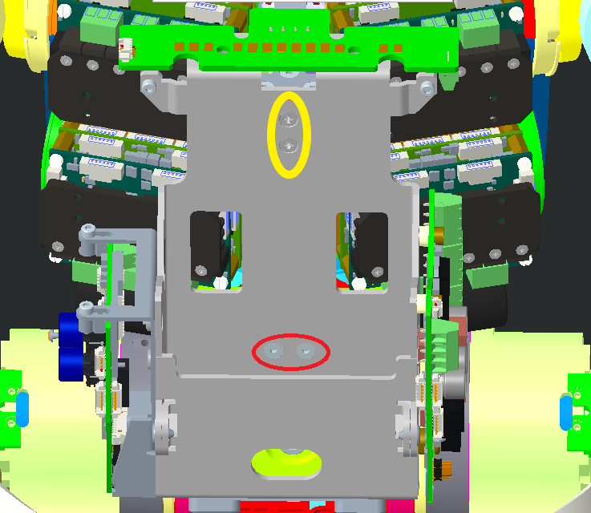 |
STEP 12: remove the 4 screws holding the battery pack holder. 2 screws M3x8 (yellow circle) 2 screws M3x6 (red circle) !!! the battery pack holder can move almost freely from now on !!! |
YOU would probably asking me why did we need to remove all of this for? And the answer is that unfortunately the cover are preventing us for either tense the cables or access to some pieces.
IF YOU HAVE **ONLY**CABLE 13 BROKEN JUST GO DIRECTLY HERE
C - remove the back pulley
Watch
once the pulley or one side of the cable 13 is removed the rotation of the torso is totally free, someone else help is more than appreciated to hold it firmly the robot in this process.
| what we have | what we want |
|---|---|
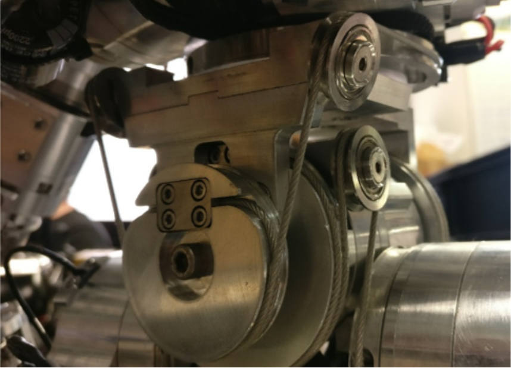 |
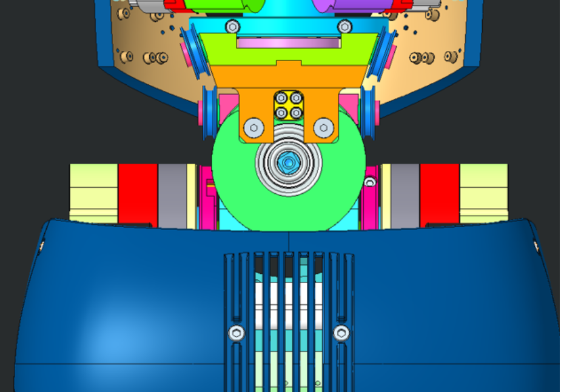 |
| pictures | step by step guide |
|---|---|
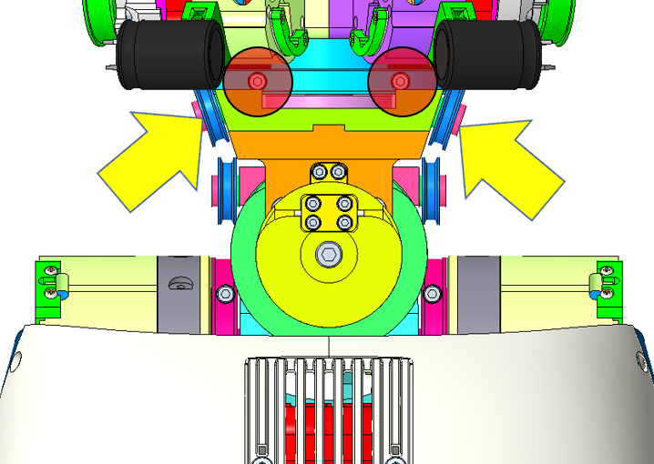 |
STEP 1: loose the screws inside of the tensioners to get some slack on the cable. You should be able to make he cable jump around the |
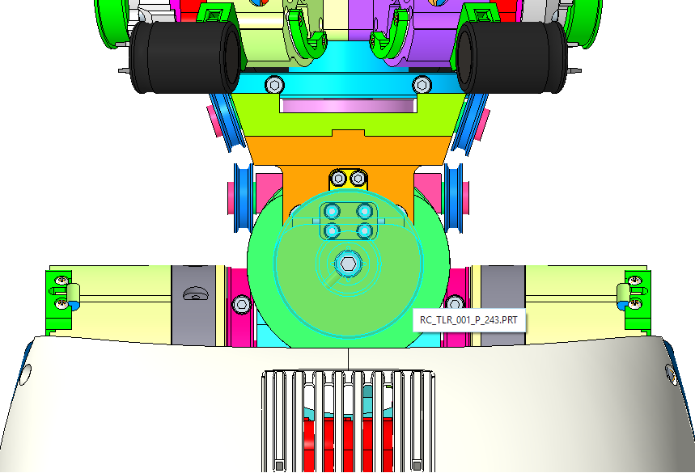 |
STEP 2: You should be able to make the cable jump over the pulley |
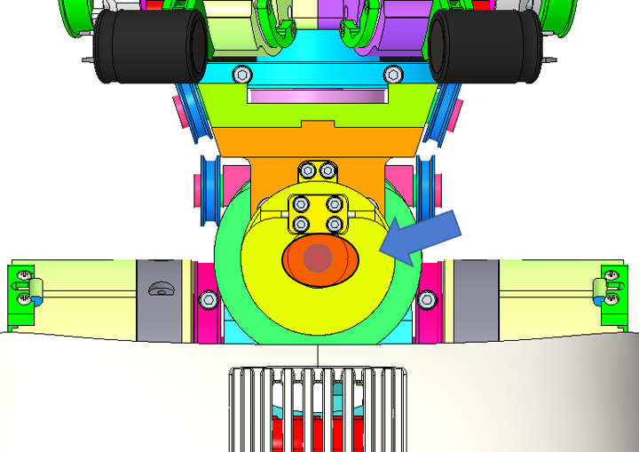 |
STEP 3: Remove the central screw of this pulley RC_TLR_001_P_243 |
| STEP 4: Use 2 fat flat screwdrivers to make the pulley popping up. -> photo needed |
D- create the require space
| pictures | step by step guide |
|---|---|
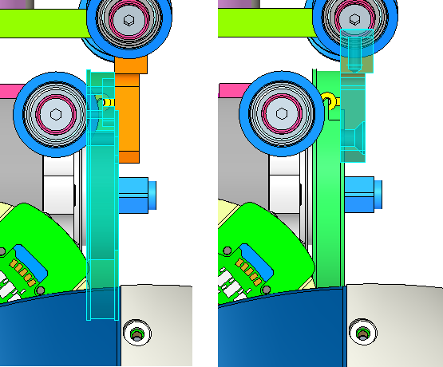 |
In order to change the cable 11, it is necessary, when you still have the upper body attached to the robot to create some space in between those 2 pieces to be able to fit the cable that you need to replace. |
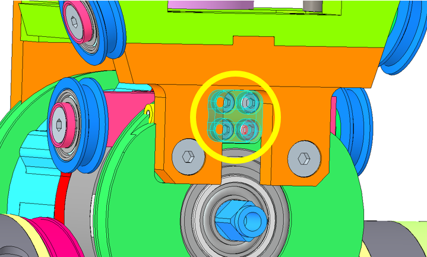 |
STEP 1: Remove the central piece which will hold the cable 11. 4 screws M2.5v5 |
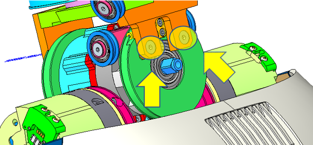 |
STEP 2: Untighten just enough to have 2mm gap in between the head screw and the plate |
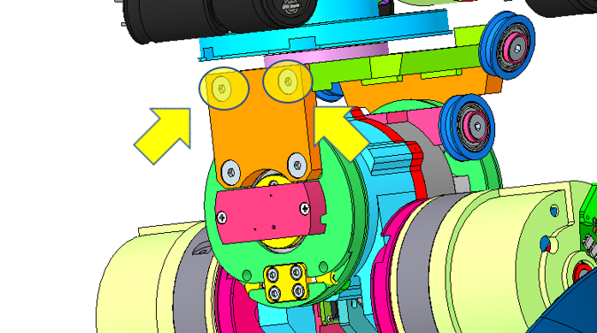 |
STEP 3: Untighten just enough to have 2mm gap in between the head screw and the plate |
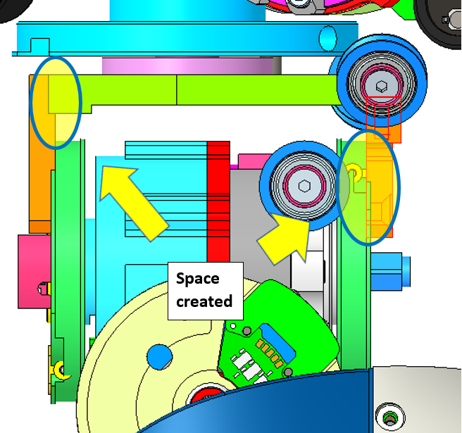 |
STEP 4: You should be able to move slightly the upper body from the torso and create some space (2mm max - just the minimum required to pass the body of the cable in between the 2 pieces). |
2.2 WAIST BACK - Cable 11¶
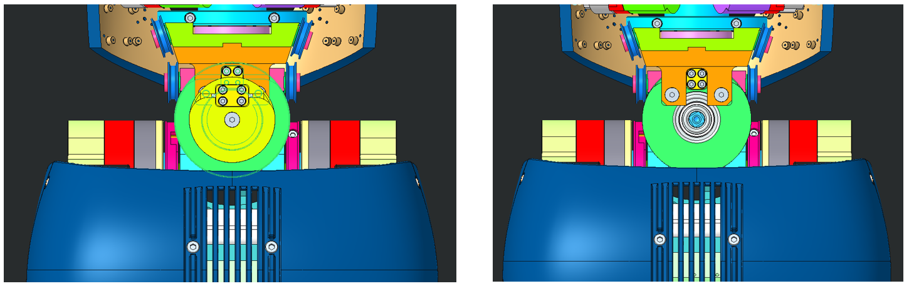
Warning
routing cable 11 is quite simple in process of construction because you don't have yet the upper body mounted atop of the waist BUT become particularly tedious in phase of repair due to the presence of this latter. If you haven't removed the cover above the torso and the back (or backpack cover), please follow this link
How to lock securedly the crimp: when you finalize your wiring it is important to realize that the tensioners are actually designed to prevent the crimp from escaping. As most of the cable inside the robot use the property of antagonism cabling it is important to have them both firmly tighten.
Rule
The crimp is always rotated upside down in order to prevent the crimp cable from popping out. The drawback of this positioning is that you always need to remove both tensioner and the screw to leave the crimp getting in the through and put back the tensioner above it to finalize the wiring.
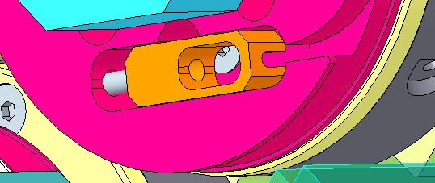
Procedure:
Take the cable and draw with a marker the middle of it. Place the cable onto the slot of the pulley (Photo 1). Put the squared plate above the cable and secure it with 4 screws with hexagonal head size M2.5x5 (Photo 2)
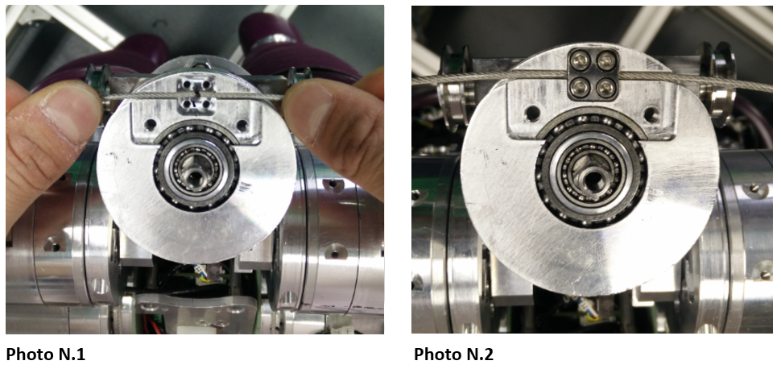
Warning
For people having the upper body still hanging CLOSE the gap
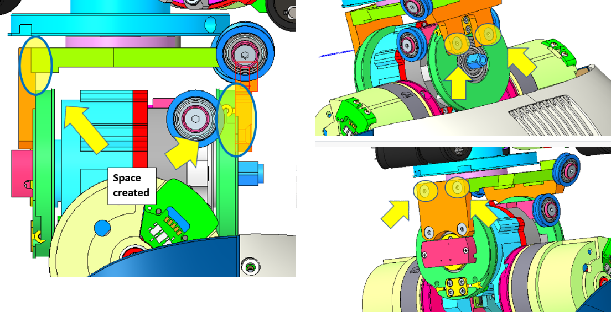
Turn the cable around the pulley taking care to cross it at the opposite side of the plate (Photo 3 - 4).
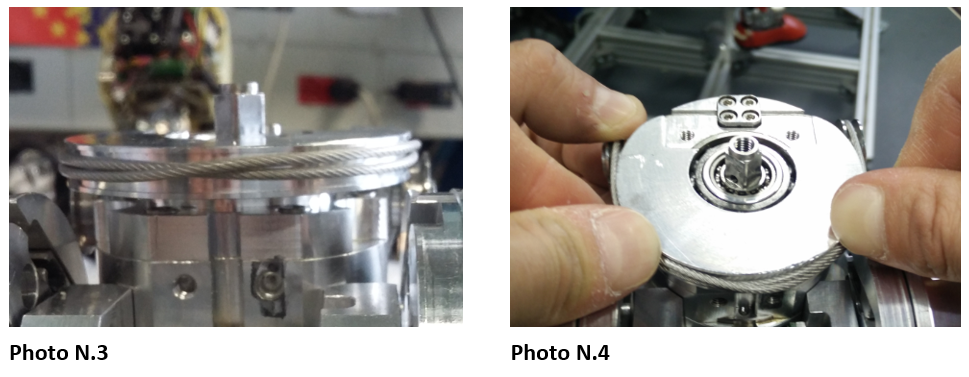
Each side of the cable go up and pass into the little side pulley (Photo 5 - 6)
Tip
Use a 2mm hexagonal screwdriver to spin the motor shaft (Photo N.9) - on both sides of iCub hips - allowing you to rotate the internal pulley (where yield the tensioners) and have it in a proper angle.
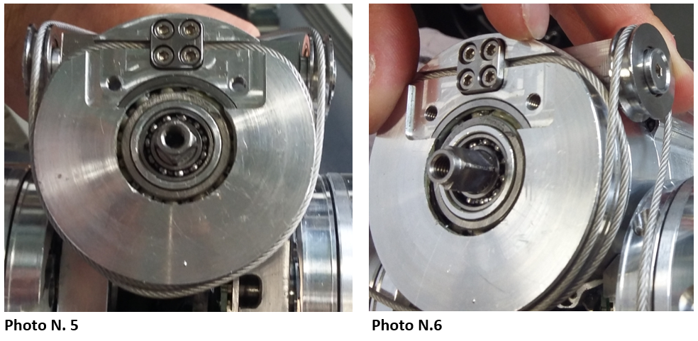
To finish the wiring, position the head of the crimps inside their respective tensioners on both side of the inner part of the hips (Photo 7 - 8). Please use the rule for a proper locking of the crimp link
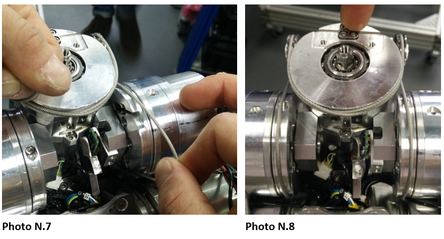
To bring the joint a proper position to start correctly the routing of cable 12, please use the head screw inside the hips (Photo 9) simultaneously or one hip at a time by few degree every now and then. To arrive on the position (Photo 10)
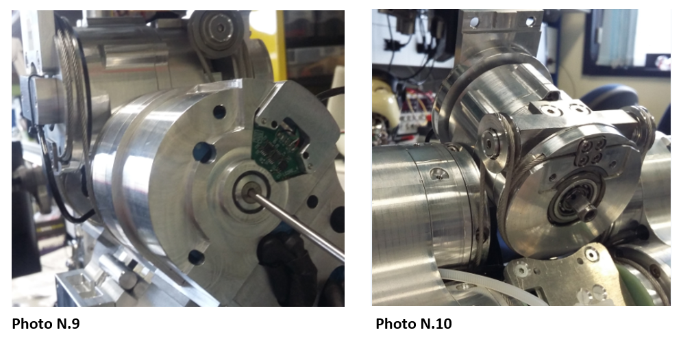
2.3 WAIST FRONT – Cable 12¶
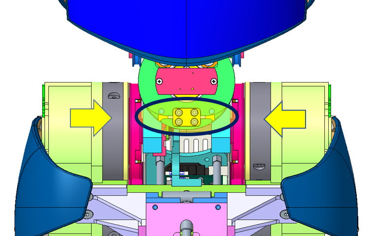
Procedure:
Take the cable and draw with a marker the middle of it. Place the cable into the slot of the pulley (Photo 12)
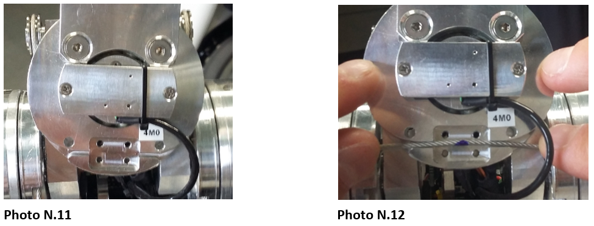
Put the rectangular plate above the cable and secure it with 4 screws M2.5x5 hexagonal head (Photo 13). Turn the cable around the pulley taking care to cross the cable above the pulley (Photo 14).
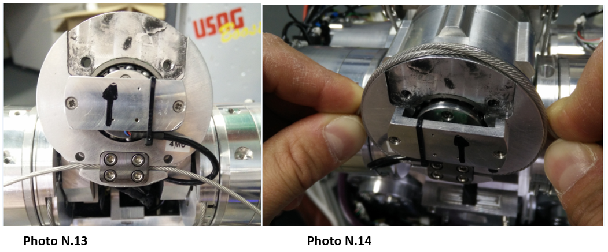
To finish the wiring, position the head of the crimps inside their respective tensioners on both side of the inner part of the hips (Photo 15 - 16). Please use the rule for a proper locking of the crimp link
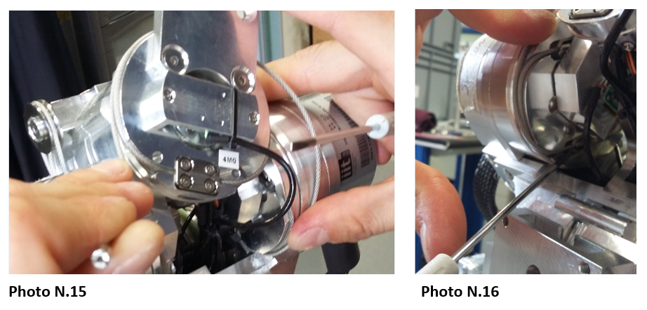
Finally, To put an end to the wiring of cable 11 and 12, just tense the 4 tensioners on which the crimps are located. Take care of tensing every one of them little by little in order to share the tension inside the tensioners in the same way.
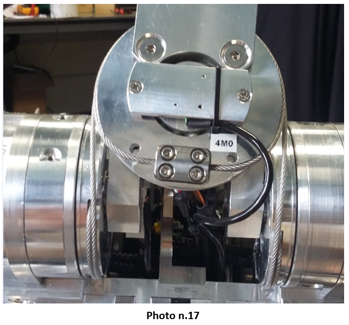
At this point, the cables of the wiring of the waist 11 and 12 is terminated and therefore it is possible to proceed with the positioning of the upper body above the latter.
2.4 WAIST TOP – Cable 13¶
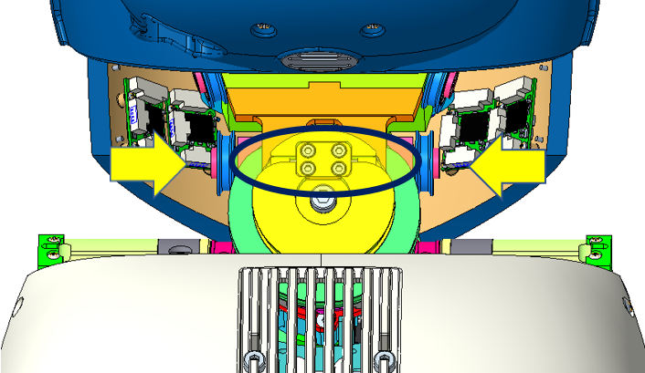
Take the cable and draw with a marker the middle of it. Place it in the slot on the piece RC_TLR_001_P_243 (Photo 18).Put the plate RC_USAL_001_P_219 on the cable and secure it with 4 screws M2.5x5 hexagonal head (Photo 19).
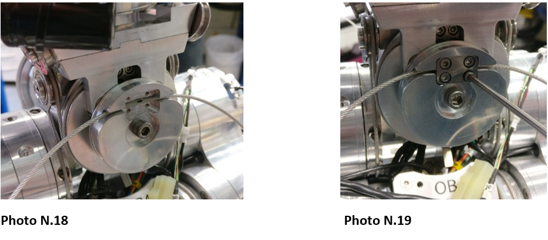
Turn the cable around the RC_TLR_001_P_243 piece taking care to cross it around the pulley, the opposite side to the plate (Photo 20).Then pass the cable through the grooves of the pulleys RC_USAL_001_P_119 (Photo 21)
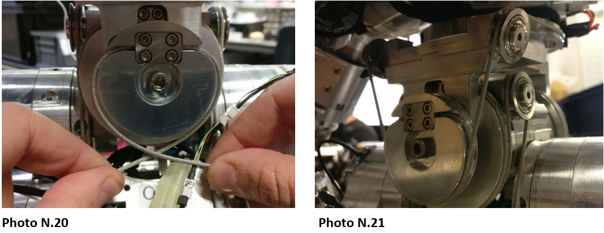
To Finish the wiring, draw the cable along the pulley RC_USAL_001_P_124, and place the crimp in the appropriate tensioner RC_USAL_001_P_131 (Photo 22). Do the same for the other side of the cable and cross the cable before reaching the tensioner (Photo 23).
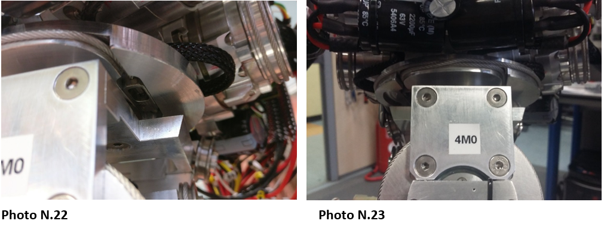
3 LEG CABLING¶
This chapter describes the steps required both during construction and in maintenance phase to route of the cables 14 of the hip of the robot and cables 15 or 16 of the ankle present on robot with lower body version 1.
3.1 HIP FLEXION – Cable 14¶
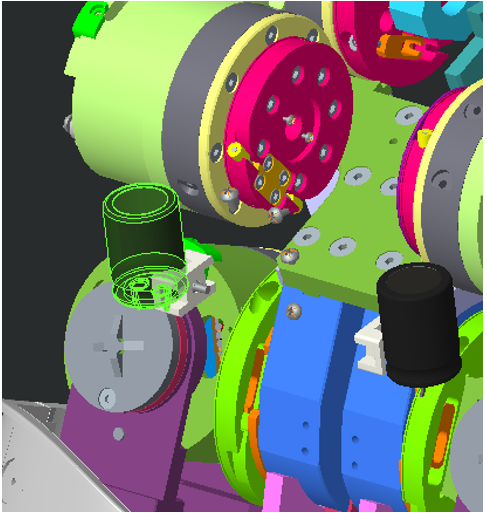
The cable has to be previously peeled off, at a distance of 435 mm from crimp, for a total of 50 mm. (see below)
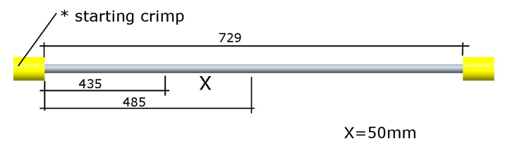
Tip
the latter version of iCub have a cover, you may need to remove it before proceeding(see picture below). To do that remove the 2 screws of the cover. To unscrew them it is important to see them, use a hexagonal screw driver 2mm and turn the motor shaft from the other side of the motor(see picture below).
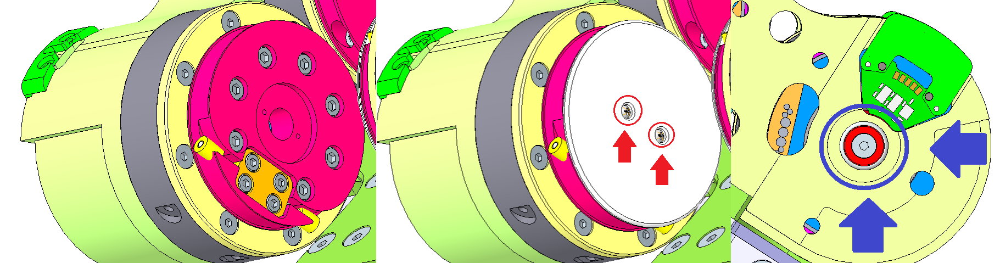
Procedure:
Take the cable and place the part stripped in the slot on the piece RC_IIT_001_P_314, then center and block it with the help of the plate RC_IIT_001_P_328 (Photo 24). The shortest part of the cable is the one going outside of the robot.
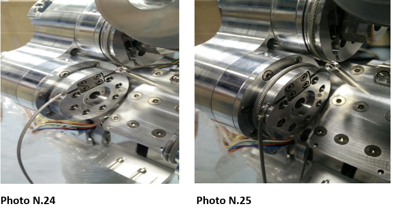
Take the inner part of the cable (the right one so to speak – or the longest) and make one turn around the pulley RC_IIT_001_P_314 (Photo 25). If done correctly you should have the 2 crimps reunited down below the hip (photo N.26). At this point proceed route the cables by making an 8 shape, by crossing the cables and follow the wiring (photo N.28) (shortest part - yellow cable) and insert both crimp inside their respective tensioner - piece RC_USAL_001_P_131 (Photo 27).
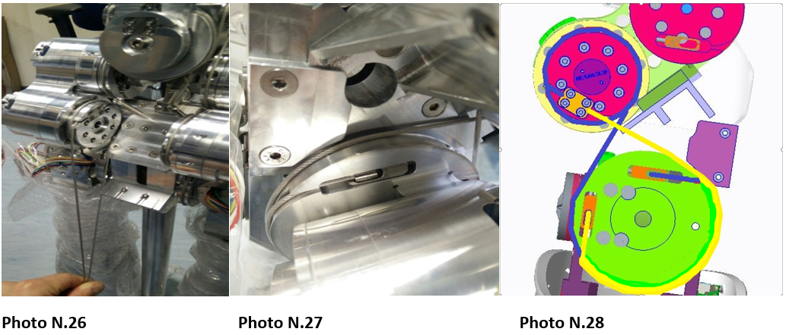
4.1 ANKLE FLEXION - Cable 15 or Cable 16¶
Those 2 cables are only on some previous iCub design V1.
Follow the following diagram in order to rewire correctly.
| ANKLE FLEXION - cable 15 | ANKLE FLEXION - cable 16 |
|---|---|
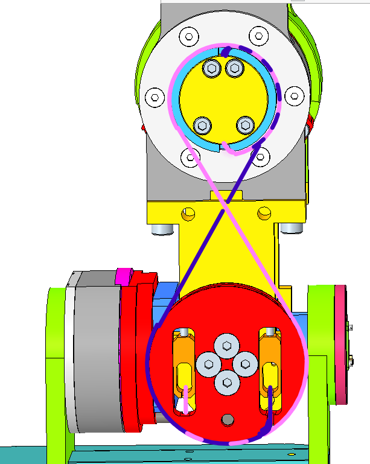 |
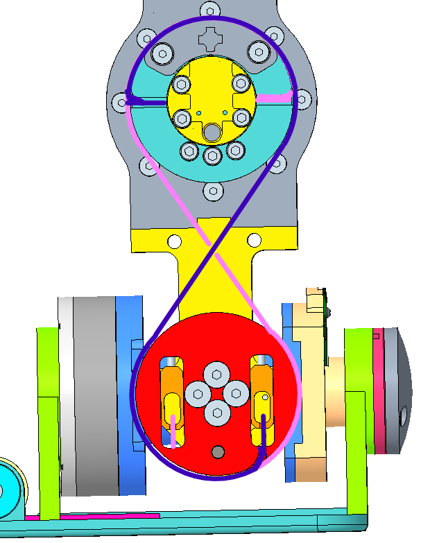 |
Tip
remove the blocker-cover to adjust the cable - when finally wired and the foot 90 degree respect to leg, put it back and tighten firmly the screws holding it in place.
| ANKLE FLEXION - cable 15 | ANKLE FLEXION - cable 16 |
|---|---|
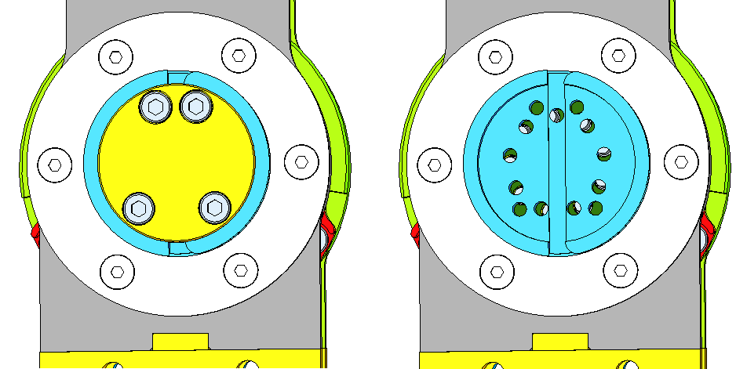 |
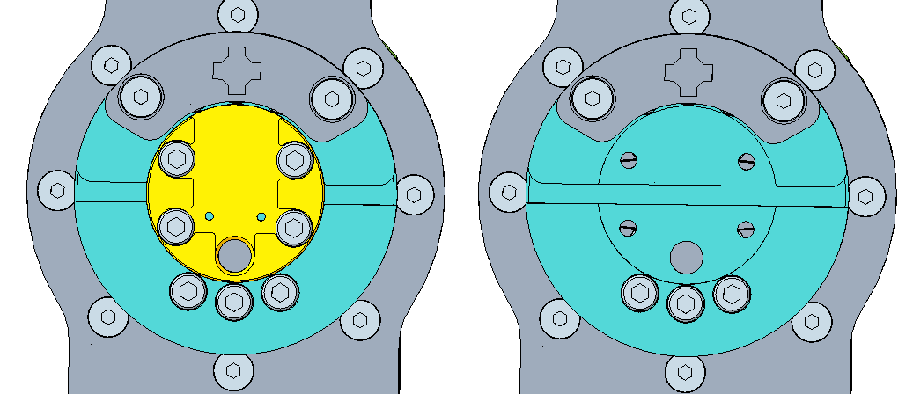 |
5 STAND – FAST ROBOT LOCKER¶
This chapter describes the construction of fast locker to connect the robot to the stand seat
5.1 STAND - Cable 29¶
Procedure:
Take the cable and put it so that the crimp goes into the slot of the piece RC_IIT_090_P_009 (Photo 29-30).
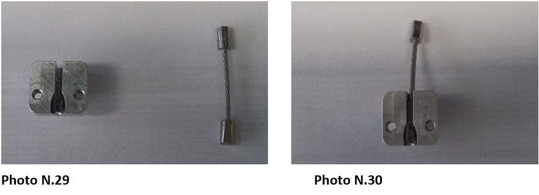
Attach the hook, or the piece PKWS4SLIDER with two screws 3x5 TSV, to RC_IIT_090_P_009 piece (Photo 31).Place on the part of the cable RC_IIT_090_P_007 piece and then the adjustment mechanism for proper closure piece RC_IIT_090_P_007 (Photo 31-32)
At this point, proceed by entering what has been previously mounted into the slot of the support RC_IIT_090_P_005 (Photo 33).Complete the installation by screwing the threaded part of the piece RC_IIT_090_P_006 with the piece RC_IIT_090_P_008 (Photo 34)